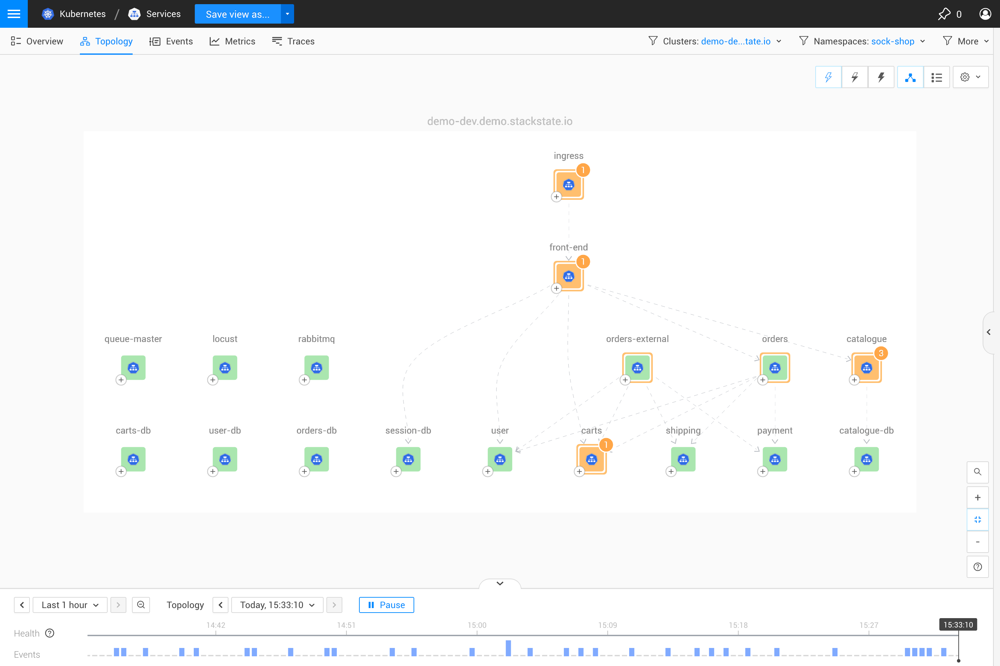
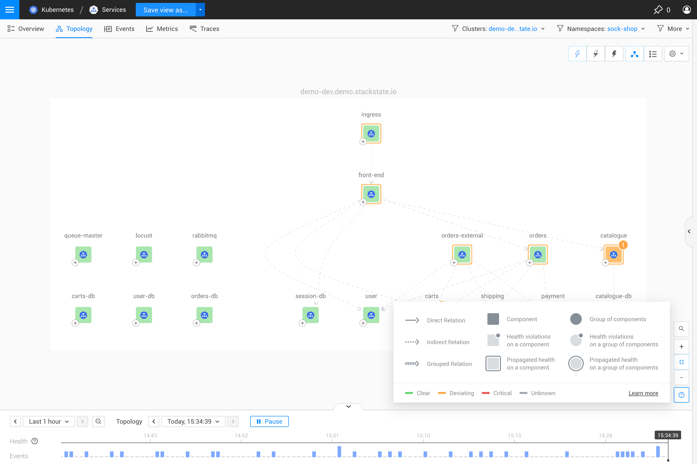
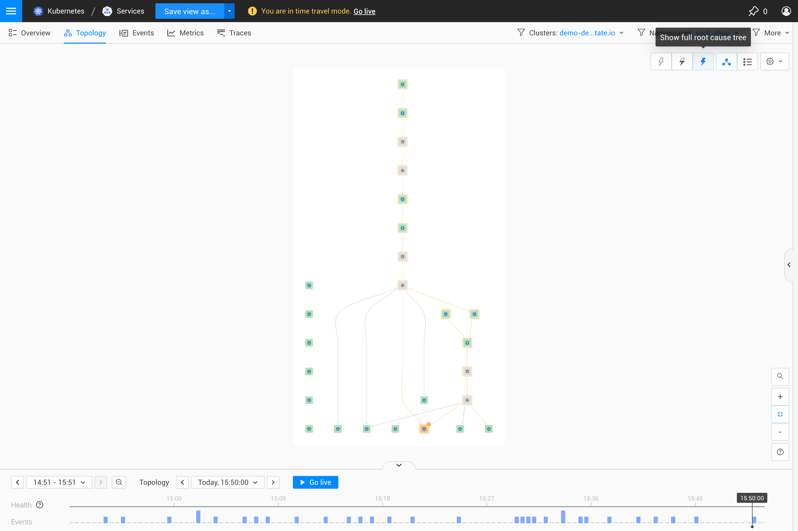
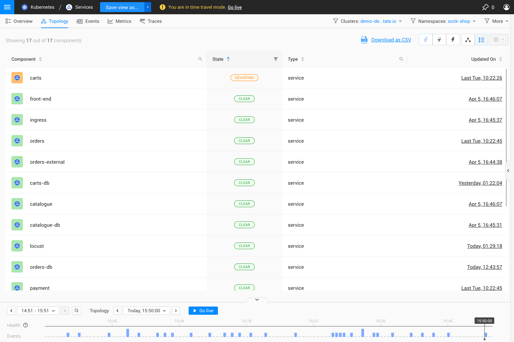

|
Dieses Dokument wurde mithilfe automatisierter maschineller Übersetzungstechnologie übersetzt. Wir bemühen uns um korrekte Übersetzungen, übernehmen jedoch keine Gewähr für die Vollständigkeit, Richtigkeit oder Zuverlässigkeit der übersetzten Inhalte. Im Falle von Abweichungen ist die englische Originalversion maßgebend und stellt den verbindlichen Text dar. |
Topologie-Perspektive
Übersicht
Die Topologie-Perspektive zeigt die Komponenten in Ihrer IT-Landschaft und deren Beziehungen.

Legende
Klicken Sie auf die Schaltfläche "Legende" (?) in der unteren rechten Ecke des Bildschirms (direkt unter den Zoom-Steuerungselementen), um eine Erklärung der in der Topologievisualisierung verwendeten Symbole und Farben anzuzeigen.

Komponenten
Die Topologie-Perspektive zeigt die gefilterten Komponenten und Beziehungen in einer ausgewählten Ansicht. Komponenten, die einen oder mehrere Monitore konfiguriert haben, melden einen berechneten Gesundheitszustand.
-
Wählen Sie eine Komponente aus, um detaillierte Informationen zur Komponente im rechten Bereich des Details-Tabs anzuzeigen - Komponentendetails.
-
Fahren Sie mit der Maus über eine Komponente, um das Kontextmenü der Komponente zu öffnen.
Kontextmenü der Komponente
Wenn Sie den Mauszeiger über eine Komponente bewegen, wird das Kontextmenü der Komponente angezeigt. Dies gibt Ihnen Informationen über die Komponente, die Folgendes umfasst:
-
Den Namen und Typ der Komponente
-
Gesundheitszustand
-
Aktionen, die spezifisch für die Komponente sind
-
Verknüpfungen, die spezifisch für die Komponente sind

Aktionen
Aktionen können verwendet werden, um die Topologieauswahl zu erweitern und alle Abhängigkeiten für die ausgewählte Komponente anzuzeigen. Weitere Aktionen können für spezifische Komponenten verfügbar sein, wie z. B. Komponentenaktionen, die als Teil eines StackPacks installiert sind.
Eine Liste der verfügbaren Aktionen ist im rechten Bereich des Details-Tabs enthalten, wenn Sie eine Komponente auswählen - Komponentendetails. Aktionen werden auch im Kontextmenü der Komponente aufgelistet, das angezeigt wird, wenn Sie mit dem Mauszeiger über eine Komponente fahren.
Verknüpfungen
Verknüpfungen geben Ihnen direkten Zugriff auf detaillierte Informationen über die spezifische Komponente:
-
Komponentenansicht öffnen - Öffnet die Komponentenmetriken für diese Komponente. Die Komponentenansicht bietet Ihnen einen Überblick über alles, was für diese Komponente und ihre direkten Nachbarn wichtig ist, abhängig von dem Komponententyp, den Sie betrachten.
-
Komponente erkunden - Öffnet eine Erkundungsansicht, die nur diese Komponente enthält. Die Erkundungsansicht ermöglicht es Ihnen, eine einzelne Komponente aus allen Perspektiven zu untersuchen, ohne die Ansichtsfilter anpassen zu müssen. Ein Doppelklick auf eine Komponente erzielt dasselbe Ergebnis.
-
Eigenschaften anzeigen - Öffnet das Eigenschaften-Popup für die Komponente. Dies entspricht dem Klicken auf ALLE EIGENSCHAFTEN ANZEIGEN im Detailbereich des rechten Panels, wenn detaillierte Informationen über eine Komponente angezeigt werden - Komponentendetails.
Beziehungen
Beziehungen zeigen, wie Komponenten in der Topologie miteinander verbunden sind. Sie werden durch eine gestrichelte oder durchgezogene Linie dargestellt und haben einen Pfeil, der die Richtung der Abhängigkeit zwischen den verbundenen Komponenten anzeigt.
-
Direkte Beziehung - Komponenten, die durch Netzwerk und jede andere Form direkter Beziehung verbunden sind
-
Indirekte Beziehung - Beziehungen zwischen Komponenten aufgrund von Netzwerkverkehr oder anderen Abhängigkeiten, ausgenommen Verbindungen zu und von externen Komponenten, die nicht in Ihrer aktuellen Topologiewahl enthalten sind
-
Gruppierte Beziehung - eine Kombination aus direkten und indirekten Beziehungen und verbindet eine oder mehrere Komponenten in der Komponenten-Gruppe
Wählen Sie eine Beziehung aus, um detaillierte Informationen darüber im Detailbereich des rechten Panels zu öffnen.
Visualisierungseinstellungen
Die Art und Weise, wie Komponenten und Beziehungen in der Topologie-Perspektive angezeigt werden, kann im Menü der Visualisierungseinstellungen in der oberen rechten Ecke des Visualisierers angepasst werden. Die Visualisierungseinstellungen werden zusammen mit der Ansicht gespeichert.
Rasteroptionen
Die Komponenten in der Topologie-Perspektive können optional in einem Gitter organisiert werden, wobei Schichten in Reihen gruppiert und Domänen als Spalten visualisiert werden. Das Gitter ist standardmäßig aktiviert. Wenn keine Gitteroptionen ausgewählt sind, wird kein Gitter angezeigt.
-
Nach Schichten organisieren - Komponenten derselben Schicht werden in derselben Gitterreihe in der Topologievisualisierung platziert. Deaktivieren, um die Reihen aus dem Gitter zu entfernen.
-
Nach Domänen organisieren - Komponenten derselben Domäne werden in derselben Gitterspalte in der Topologievisualisierung platziert. Deaktivieren, um die Spalten aus dem Gitter zu entfernen.
Wenn Sie beispielsweise eine Geschäftsservice-Visualisierung eines Stacks haben, der aus vier oder fünf verschiedenen Quellen stammt, wird die Quelle (Domäne), aus der sie kommen, in der Visualisierung nicht so wichtig sein. Dies könnte eine gute Gelegenheit sein, die Topologie mit Nach Domänen organisieren deaktiviert zu visualisieren.
Gruppierung von Komponenten
Topologievisualisierungen großer Mengen von Komponenten können schwer lesbar werden. SUSE Observability kann Komponenten innerhalb derselben Ansicht gruppieren. Die Gruppierung reduziert die Anzahl der Komponenten und Beziehungen auf etwas visuell Handhabbares.
Die Gruppierung ist standardmäßig aktiviert und respektiert die ausgewählten Gitteroptionen - Komponenten müssen sich in derselben Gitterreihe/-spalte befinden, um zusammen gruppiert zu werden.
Drei Arten der Gruppierung sind verfügbar, oder Sie können wählen, Komponenten nicht zusammen zu gruppieren:
-
Keine Gruppierung - Komponenten und Beziehungen werden in keiner Weise gruppiert.
-
Automatische Gruppierung - Die Gruppierungseinstellungen werden automatisch angepasst, um die Anzahl der visualisierten Komponenten oder Komponenten-Gruppen unter 35 zu halten.
-
Nach Zustand und Typ gruppieren - Komponenten desselben Typs und mit demselben Gesundheitszustand werden in einer Gruppe zusammengefasst. Wenn eine der gruppierten Komponenten ihren Gesundheitszustand ändert und nicht mehr mit dem Gesundheitszustand der Komponentengruppe übereinstimmt, wird sie aus der Gruppe herausgenommen. Wenn andere Komponenten desselben Typs denselben Gesundheitszustand haben, wird eine neue Gruppe erstellt.
-
Nach Typ, Zustand und Beziehung gruppieren - Komponenten werden wie bei Nach Zustand und Typ gruppieren gruppiert, während Informationen über Beziehungen zu Komponenten außerhalb der Gruppe erhalten bleiben. Alle Komponenten in einer Gruppe haben die gleiche Quell- und Zielverbindung. Dies ist nützlich, da das Gruppieren von Komponenten nur nach Zustand und Typ dazu führen kann, dass einige Informationen über die Beziehungen der Komponenten in der Gruppe verloren gehen.
Navigation
Hinein- und Herauszoomen
Es gibt Zoomtasten in der unteren rechten Ecke des Topologie-Visualisierers. Die Plus-Taste zoomt in die Topologie hinein, die Minus-Taste zoomt heraus. Zwischen beiden Tasten befindet sich die An Bildschirm anpassen-Taste, die herauszoomt, sodass die gesamte Topologie sichtbar wird.
Komponente finden
Sie können eine bestimmte Komponente in der Topologie finden, indem Sie CTRL + SHIFT + F klicken und die ersten Buchstaben des Komponenten-Namens eingeben. Alternativ können Sie das Komponente finden-Lupe-Symbol in der unteren rechten Ecke des Topologie-Visualisierers auswählen.
Sehen Sie die vollständige Liste der SUSE Observability-Tastenkombinationen.
Ursache anzeigen
Wenn es Komponenten mit Monitoren gibt, die außerhalb der Ansicht liegen, aber die Komponente in der Ansicht beeinflussen könnten, zeigt die Topologie-Perspektive den Gesundheitszustand aller angezeigten Komponenten an.
-
Ursache nicht anzeigen - Zeigen Sie die Ursachen der durch die aktuellen Topologie-Filter angezeigten Komponenten nicht an.
-
Nur Ursache anzeigen - Zeigen Sie nur die Ursachen der durch die aktuellen Topologie-Filter angezeigten Komponenten an, die einen
CRITICALoderDEVIATINGpropagierten Gesundheitszustand haben. Indirekte Beziehungen werden visualisiert, wenn eine Komponente direkt von mindestens einer unsichtbaren Komponente abhängt, die zur Ursache führt. -
Vollständigen Ursachenbaum anzeigen - Zeigen Sie alle Pfade von Komponenten, die durch die aktuellen Topologie-Filter angezeigt werden und einen
CRITICALoderDEVIATINGpropagierten Gesundheitszustand haben, zu ihren Ursachen an.

Listenmodus
Die Komponenten in der Topologie-Visualisierung können auch in einer Liste anstelle eines Diagramms angezeigt werden:

Als CSV exportieren
Im Listenmodus kann die Komponentenliste als CSV-Datei exportiert werden. Die CSV-Datei enthält name, state, type und updated Details für jede Komponente in der Ansicht.
-
Aus der Topologie-Perspektive klicken Sie auf das Listenmodus Symbol oben rechts, um die Topologie im Listenmodus zu öffnen.
-
Klicken Sie oben auf der Seite auf Als CSV herunterladen.
-
Die Komponentenliste wird als CSV-Datei mit dem Namen
<view_name>.csvheruntergeladen.
-